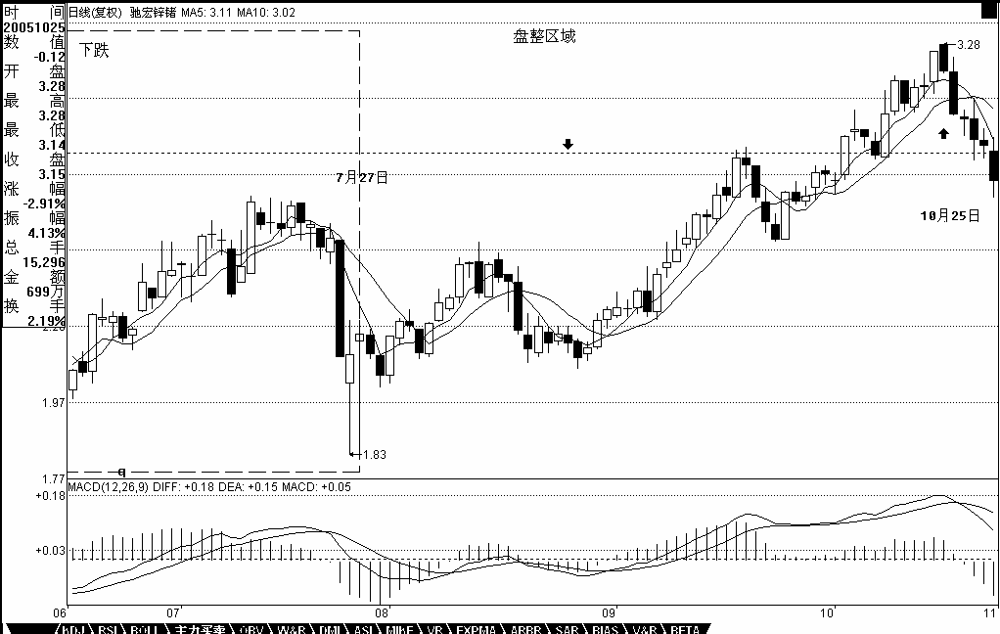

教你炒股票17：走势终完美
日期：(2006-12-18 11:52:42) 分类：[时政经济（缠中说禅经济学）]
任何级别的所有走势，都能分解成趋势与盘整两类，而趋势又分为上涨与下跌两类。以上结论，不是从天而降的，而是从无数图形的分析实践中总结出来的，正如《论语》所说“由诲女，知之乎！知之为，知之；不知为，不知；是知也。”（请看本ID相应系列的解释）这个从实际图形中总结出来的简单经验，却是一切有关技术分析理论的唯一坚实基础。这个基础，所有接触技术分析的人都知道，但可惜没有人能深究下去，然后就沉入技术指标、交易系统等苦海不能自拔。试想，基础都没搞清楚，又有什么可立起来？而基础稳固了，技术指标、交易系统等都是小儿科了。
由上可得到“缠中说禅技术分析基本原理一”：任何级别的任何走势类型终要完成。后面一句用更简练的话，就是“走势终完美”。这个原理的重要性在于把实践中总结出来的、很难实用的、静态的“所有级别的走势都能分解成趋势与盘整”，转化成动态的、可以实用的“走势类型终要完成”，这就是论语所说的智慧：“所有级别的走势都能分解成趋势与盘整”是“不患”的，是无位次的，而“走势类型终要完成”的“走势终完美”以“所有级别的走势都能分解成趋势与盘整”的无位次而位次之，而“患”之。
因为在实际操作中，面对是都是鲜活的、当下的，而正如《论语》所说的，“由知、德者，鲜矣！”，必须直面这种当下、鲜活，才能创造。而在任何一个走势的当下，无论前面是盘整还是趋势，都有一个两难的问题：究竟是继续延续还是改变。例如，原来是在一个趋势中，该趋势是否延续还是改变成相反的趋势或盘整，这样的问题在当下的层次上永远是“不患”的，无位次的。任何宣称自己能解决这个两难问题的，就如同在地球上宣称自己不受地球引力影响一样无效，这是任何面对技术图形的人都必须时刻牢记的。但这个两难的“不患“，在“所有级别的走势都能分解成趋势与盘整”的“不患”下，又成了其“患”，就因此可以位次（该问题的理解，可以参考本ID关于《论语》相关章节的解释）。正因为当下的走势是两难的，也就是在不完美到完美的动态过程中，这就构成了其“不患”而位次的基础。“走势终完美”，而走势“不患”地可以分解成趋势与盘整，换言之，“趋势终完美，盘整也终完美”。
“走势终完美”这句话有两个不可分割的方面：任何走势，无论是趋势还是盘整，在图形上最终都要完成。另一方面，一旦某种类型的走势完成以后，就会转化为其他类型的走势，这就是“不患”而有其位次。在技术分析里，不同的位次构成不同的走势类型，各种位次以无位次而位次。而如何在不同位次之间的灵活运动，是实际操作中最困难的部分，也是技术分析最核心的问题之一。
为了深入研究这复杂问题，必须先引入缠中说禅走势中枢的概念：某级别走势类型中，被至少三个连续次级别走势类型所重叠的部分，称为缠中说禅走势中枢。换言之，缠中说禅走势中枢就是至少三个连续次级别走势类型重叠部分所构成。这里有一个递归的问题，就是这次级别不能无限下去，就像有些半吊子哲学胡诌什么“一分为二”，而“分”不是无限的，按照量子力学，物质之分是有极限的，同样，级别之次也不可能无限，在实际之中，对最后不能分解的级别，其缠中说禅走势中枢就不能用“至少三个连续次级别走势类型所重叠”定义，而定义为至少三个该级别单位K线重叠部分。一般来说，对实际操作，都把这最低的不可分解级别设定为1分钟或5分钟线，当然，也可以设定为1秒种线，但这都没有太大区别。
有了上面的定义，就可以在任何一个级别的走势中找到“缠中说禅走势中枢”。有了该中枢，就可以给“盘整”、“趋势”给出一个最精确的定义：
缠中说禅盘整：在任何级别的任何走势中，某完成的走势类型只包含一个缠中说禅走势中枢，就称为该级别的缠中说禅盘整。
缠中说禅趋势：在任何级别的任何走势中，某完成的走势类型至少包含两个以上依次同向的缠中说禅走势中枢，就称为该级别的缠中说禅趋势。该方向向上就称为上涨，向下就称为下跌。
那么，是否可能在某级别存在这样的走势，不包含任何缠中说禅走势中枢？这是不可能的。因为任何图形上的“向上+向下+向上”或“向下+向上+向下”都必然产生某一级别的缠中说禅走势中枢，没有缠中说禅走势中枢的走势图只意味着在整张走势图形上只存在两个可能，就是一次向下后永远向上，或者一次向上后永远向下。要出现这两种情况，该交易品种必然在一定时期交易后永远被取消交易，而这里探讨走势的一般情况，其前提就是该走势可以不断延续下去，不存在永远取消交易的情况，所以，相应有
“缠中说禅技术分析基本原理二”：任何级别任何完成的走势类型，必然包含一个以上的缠中说禅走势中枢。
由原理一、二以及缠中说禅走势中枢的定义，就可以严格证明：
“缠中说禅走势分解定理一”：任何级别的任何走势，都可以分解成同级别“盘整”、“下跌”与“上涨”三种走势类型的连接。
“缠中说禅走势分解定理二“：任何级别的任何走势类型，都至少由三段以上次级别走势类型构成。
这些证明都很简单，就和初中几何的证明一样，有兴趣自己来一下。由上面的原理和定理，就可以严格地给出具体操作唯一可以依赖的两个坚实的基础。因为某种类型的走势完成以后就会转化为其他类型的走势，对于下跌的走势来说，一旦完成，只能转化为上涨与盘整，因此，一旦能把握下跌走势转化的关节点买入，就在市场中占据了一个最有利的位置，而这个买点，就是前面反复强调的“第一类买点”；而因为无论是趋势还是盘整在图形上最终都要完成，所以在第一类买点出现后第一次次级别回调制造的低点，是市场中第二有利的位置，为什么？因为上涨和盘整必然要在图形上完成，而上涨和盘整在图形上的要求，是必须包含三个以上的次级别运动，因此后面必须还至少有一个向上的次级别运动，这样的买点是绝对安全的，其安全性由走势的“不患”而保证，这，就是在前面反复强调的第二类买点。买点的情况说了，卖点的情况反之亦然。
综上所述，就不难明白为什么本ID在前面反复强调这两类买卖点了。因为该两类买卖点是被最基础的分析所严格保证的，就如同几何中严格定理一样，只要找准了这两类买卖点，在市场的实际走势中是战无不胜的，是波涛汹涌的市场中最坚实的港湾。关于该两类买卖点与走势及上述原理、定理间密不可破的逻辑关系，必须切实理解体会，这是所有操作中最坚实、最不能混淆的基础。 由上面的原理、定理，就可以继续证明前面已经说过的“缠中说禅买卖点定律一”：任何级别的第二类买卖点都由次级别相应走势的第一类买点构成。
这样，就像前面曾说过的，任何由第一、二类买卖点构成的缠中说禅买卖点，都可以归结到不同级别的第一类买卖点。由此得到“缠中说禅趋势转折定律”：
任何级别的上涨转折都是由某级别的第一类卖点构成的；任何的下跌转折都是由某级别的第一类买点构成的。
注意，这某级别不一定是次级别，因为次级别里可以是第二类买卖点，而且还有这种情况，就是不同级别同时出现第一类买卖点，也就是出现不同级别的同步共振，所以这里只说是某级别。 本ID以上对技术分析的理论构建，绝对前无古人，就像欧几里德之于几何一样。这是为纷繁的技术分析找到了一个坚实的理论基础，由这些原理、定理，可以继续引申出不同的定理，就像几何里面一样。这些定理，都是抛开一切偶然因数的，而实际的操作，必须建立在此之上，才会长期立于不败之地。
这些问题以后还要逐步展开，这里先把两个前面已经让各位思考例子来分析一下，让各位对趋势、级别、走势中枢等概念有一个感性的认识，毕竟上面抽象的方法并不是每个人都能理解的：
驰宏锌锗：为什么从2004年6月2日到2005年7月27日，构成标准的“下跌+盘整+下跌”的走势，而类似的图形在580991上不算，这唯一的原因就是因为后者在日线的下跌中并不构成日线级别的缠中说禅走势中枢，而在30分钟线上，这个中枢是明确的。所以580991只构成30分钟级别上的“下跌+盘整+下跌”。
其后的上涨，对600497驰宏锌锗， 2005年7月27日到10月25日，明确地出现在日线上的上涨走势（为什么？因为在日线上明确地看到两个缠中说禅走势中枢）。而580991从2006年10月23日到12月13日，只构成日线上的盘整走势（为什么？因为在日线上明确地看到一个缠中说禅走势中枢）。
两者力度上有如此区别的技术上的原因就是上面两个：一、“下跌+盘整+下跌”走势的出现级别不同，一个是日线，一个是30分钟的。二、其后的第一段走势，一个是日线上涨，一个是日线盘整。

【编者注：此图可能是当时的网友补充的】
以上内容，足够各位消化几天了。后面还有很多内容，逐一写来。但请注意版权，发现抄袭的本ID要抓来狗头铡给铡了。最后布置几条思考题：
1、 连接两相邻同级别缠中说禅走势中枢的一定是趋势吗？一定是次级别的趋势吗？
2、 背驰是两相邻同向趋势间，后者比前者的走势力度减弱所造成的，如果用均线或MACD等判断其力度，一定要在同级别的图上吗？同级别的MACD红绿柱子背驰一定反映某级别趋势间出现背驰吗？是相应级别的趋势出现背驰吗？
3、 盘整的高低点是如何造成的。（这个问题有点难度，提示，用缠中说禅走势中枢以及级别等进行分析。）